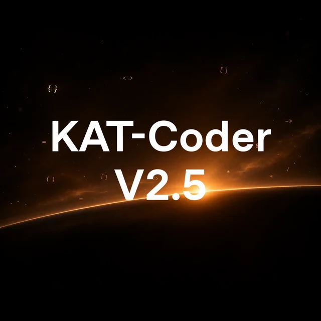
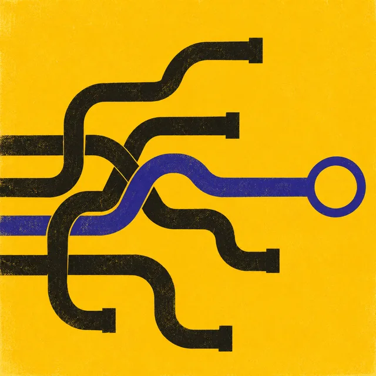
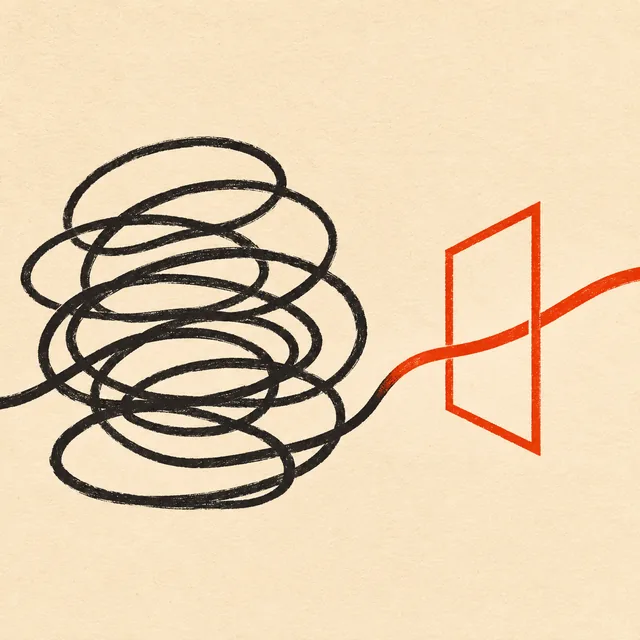
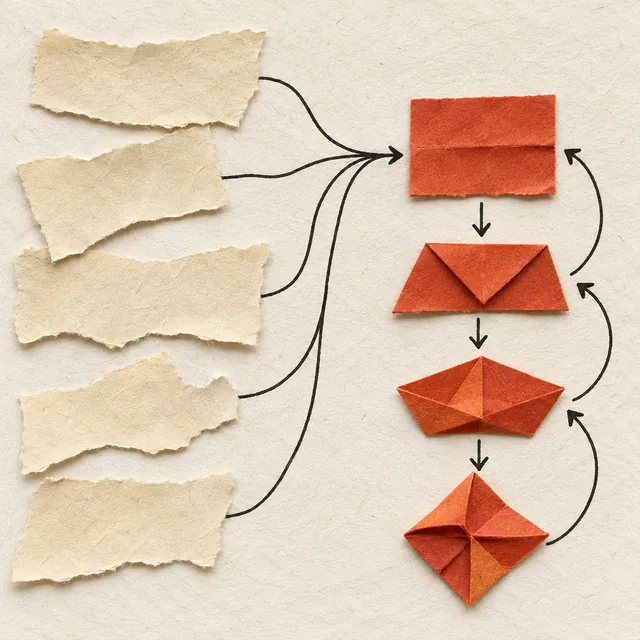
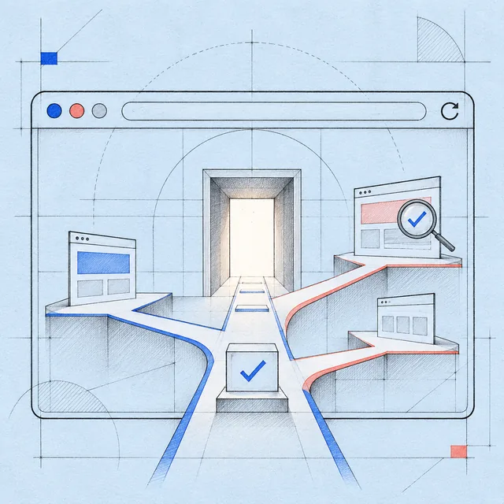
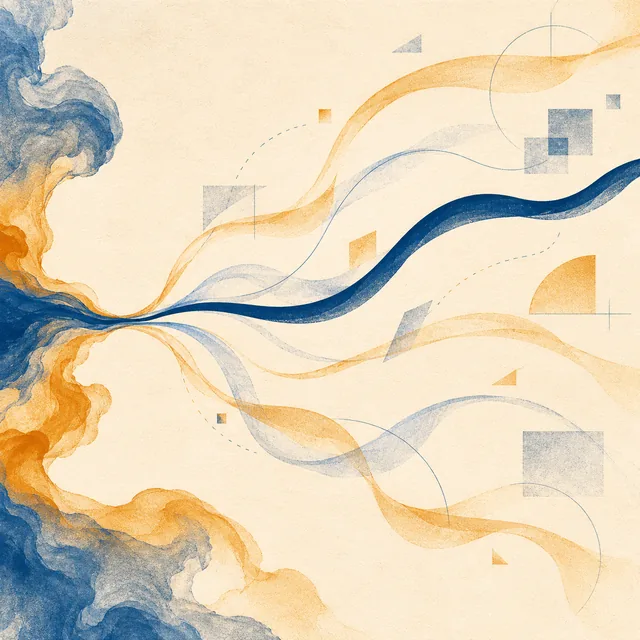
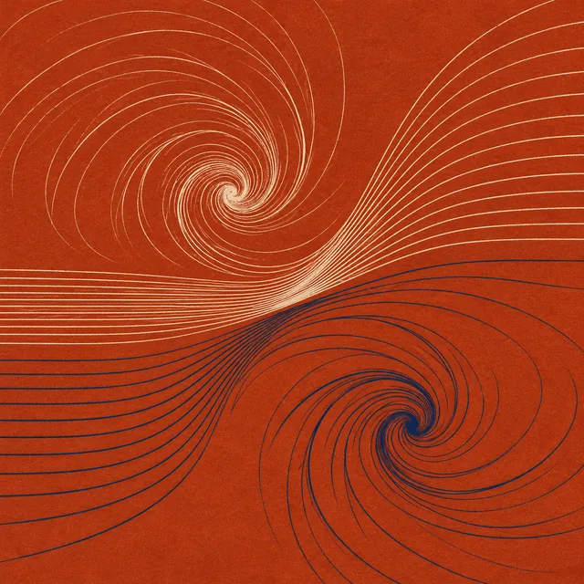
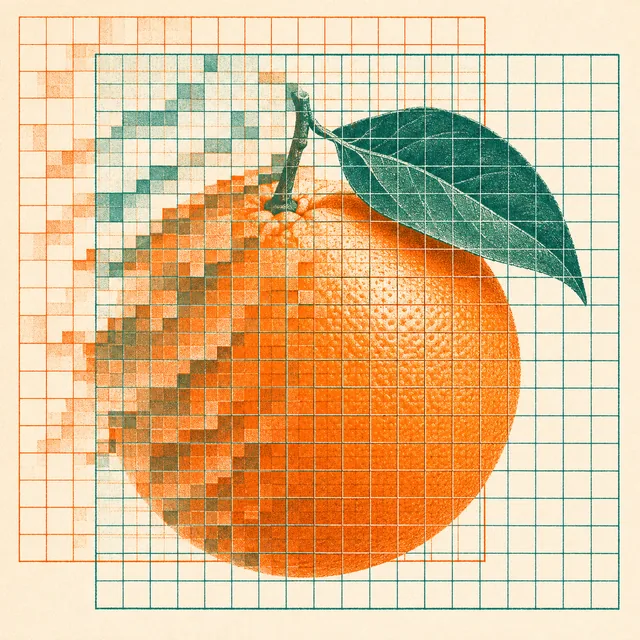
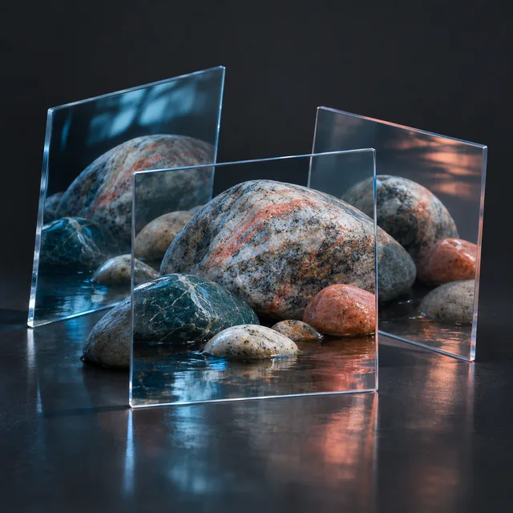
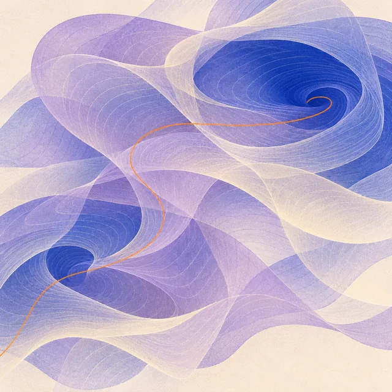

Introducing KAT-Coder-V2.5
KAT-Coder-V2.5 combines environment verification, trajectory recovery, and an asymmetric actor–critic objective to improve the feedback used to train coding agents.

KAT-Coder-V2.5 combines environment verification, trajectory recovery, and an asymmetric actor–critic objective to improve the feedback used to train coding agents.

The open-weight, 35B-parameter mixture-of-experts model adapts the V2.5 training recipe with penalties for excessive tool calls, failed calls, and repetition.
KAT-Coder-V2 separates coding-agent skills during training, then distills them into a single model. Its results also show how much the surrounding agent software matters.
LPM combines an image restoration prior, temporal anchors, and a shortened sampling pipeline to address the constraints of large-scale video enhancement.

Updating an agent during a task can reinforce the very behavior that made it stall. aTTT reduces the training weight of repeated text while retaining new evidence.

MMG2Skill separates access to instructions from the harder work of grounding, revising, and knowing when to stop following them.

WebCompass evaluates generation, editing, and repair with browser evidence, separating a page that runs from one that behaves and looks as requested.
ASASR combines frequency-aware preference learning with targeted negative examples to reduce structural artifacts in generative super-resolution.

ResFlow-Tuner explores alternative trajectories inside a flow model and uses an ensemble of image-quality rewards to choose which ones to continue.
ShiftLUT learns where to gather image features, then turns that spatial knowledge into cheap, fixed shifts for deployment.
InstantViR distills a video diffusion prior into a streaming solver, then confronts the decoder bottleneck that remains.
A twisted magnetic ring generates its own vortices and counter-propagating waves, opening a route from stored magnetic energy to local bursting.
VARSR adapts visual autoregression to super-resolution, using the input image as a prefix and diffusion only to repair quantization residuals.
A three-branch invertible block separates brightness, color, and fine detail to improve learned downscaling and reconstruction.

A geometric analysis connects the curvature of magnetic field lines to vortex generation, then tests how a neighboring vortex changes the outcome.

OAPT uses the offset between successive JPEG compressions to decide which image regions should attend to one another.
CPGA uses motion vectors, predictions, and residuals already produced by a video codec to recover detail after compression.
XPSR gives a diffusion restorer two kinds of language guidance: a description of the scene and a diagnosis of its degradation.

PTM-VQA combines frozen visual models and learns a small shared representation for predicting how people rate a video.
CasSR first builds a cleaner reference image, then lets a diffusion model consult both that reference and the original observation.
Simulations follow a pair of unknotted helical flux tubes through successive reconnections, revealing a temporary increase in topological complexity.

A virtual transport velocity separates the motion of vortex surfaces from the motion of fluid particles, revealing when dissipation can coexist with preserved topology and when a visualization is following the wrong structure.
Try another title, author, or topic.